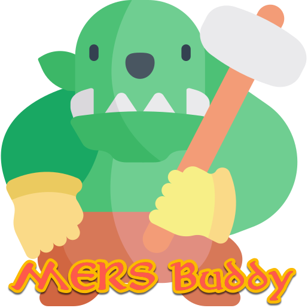

Ihr Browser unterstützt das Video-Tag nicht.

Mal riechen lassen?
Hier geht's zur App
MERS • Angriffe & Kritische Treffer
Installieren
1) Angriff
Waffenart
Rüstungsklasse & Gegnertyp
Normal
Gross
Gewaltig
Angriffswert (berechnet)
Treffer ermitteln
Zurücksetzen
Noch kein Ergebnis.
2) Kritischer Haupttreffer
Würfelwurf
Krit-Typ
(automatisch aus Schritt 1 übernommen)
Stich (P)
Streich (S)
Hieb (K)
Schlag
Hitze
Kategorie
(auto)
A
B
C
D
E
Kritischer Treffer ermitteln
Noch kein Ergebnis.
3) Nebentreffer (optional)
Nebentreffer-Tabelle
(eine wählen)
Kategorie
A
B
C
D
E
Würfelwurf
Nebentreffer ermitteln
Noch kein Ergebnis.
Audio & Sprache
Musik ▶︎
Musik-Lautstärke
Hintergrundmusik je Tabelle
Lautstärke
TTS-Fallback (falls keine MP3 gefunden)